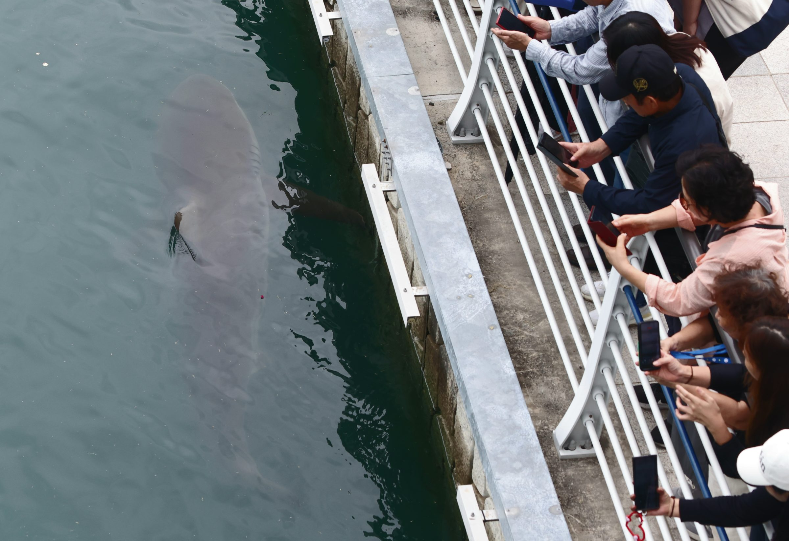
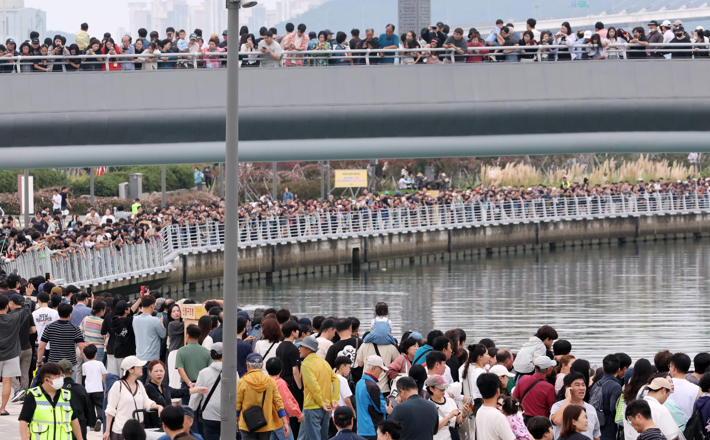
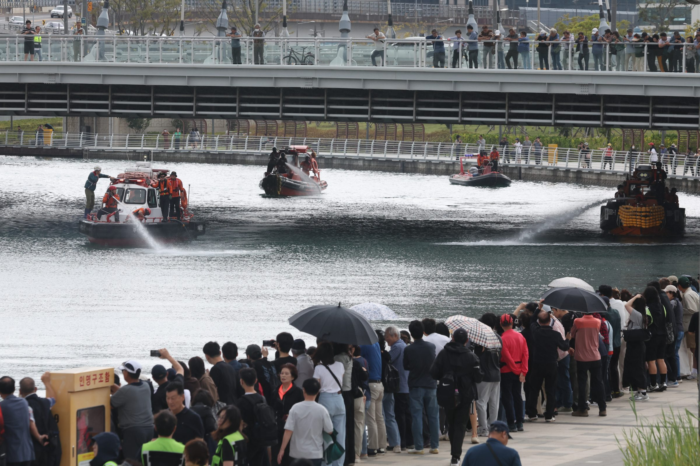
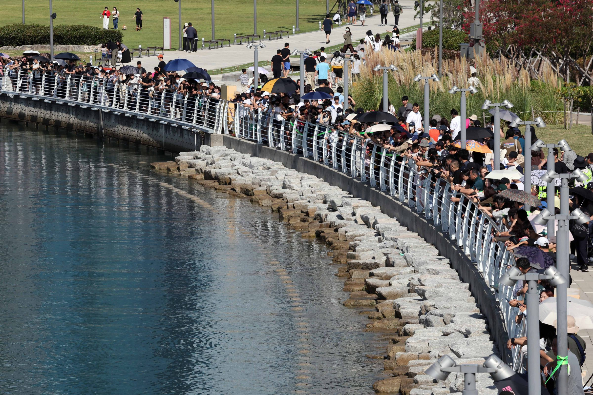
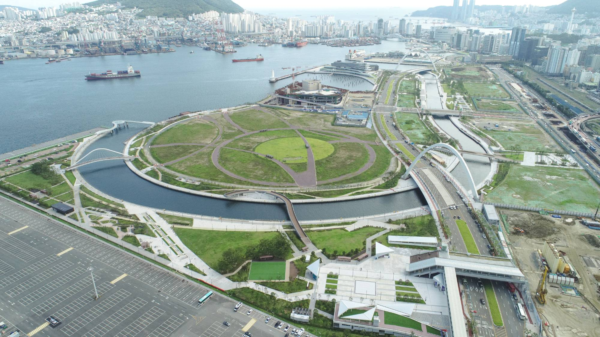
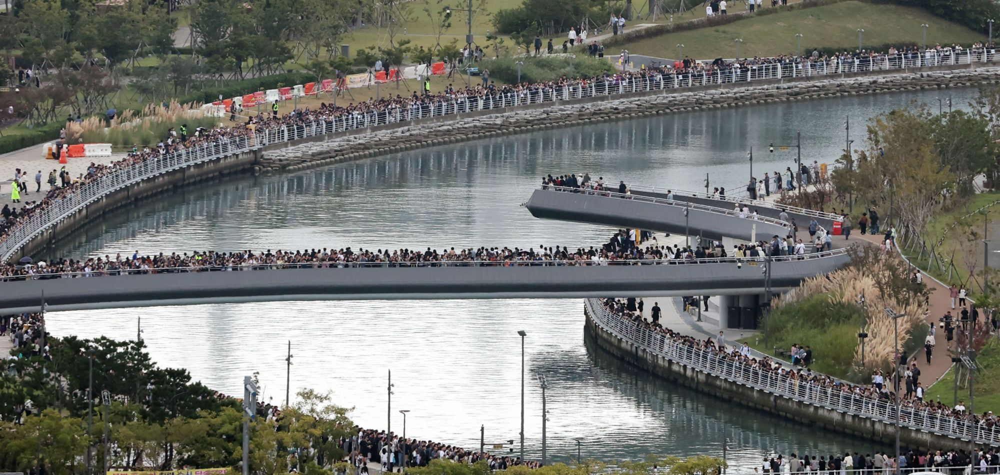
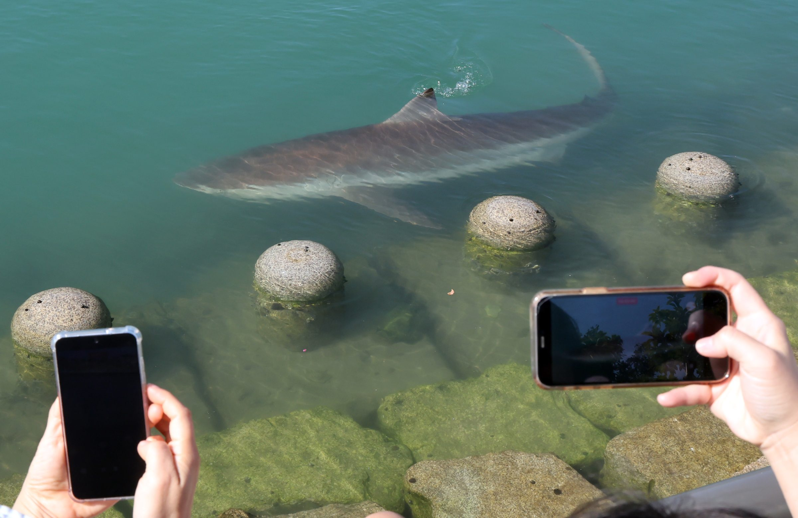

가능성 ①
몰아내려 하자 피했나
자극을 받은 상어는
원하는 방향으로만 움직이지 않는다
29일 작업에서 부캉이는 보도교 5번 방향까지 이동했지만 선박 아래로 빠져나가 수로 안쪽으로 되돌아가거나 분사하는 물 위로 계속 헤엄치는 상황을 반복했다.
김진구 부경대 자원생물학전공 교수는 "무태상어는 자극을 받았을 때 수중으로 잠수를 한다"고 설명했다. 사람이 유도하려는 방향과 상어가 자극을 피하는 방향이 다를 수 있다.
한눈에 알아볼지도｜부캉이편
북항 수로는 어떤 곳이길래
사진 뉴시스 진민현 기자



9월 부산 북항에
상어 한 마리가 나타났다
사람들은 이름을 붙였다부캉이
그런데 부캉이는
좀처럼 떠나지 않았다
29일 이동 모습은 보도를 바탕으로 한 개략 재구성
아이콘 크기는 실제 축척과 다름
지도 데이터 © OpenStreetMap contributors (ODbL) · 도식 디자인·편집 뉴시스 · 길이와 폭은 OSM 지도 기준 추정
부캉이는
대체 어디에 있는 걸까
부캉이가 있는 곳은
부산항 북항
그 안에서도
작은 친수공원 수로에 머물고 있다
어느 길로 들어왔는지는
확인되지 않았다
부캉이가
계속 맴도는 곳
랜드마크 부지를 감싸고 도는
좁은 인공 수로다

사진 뉴시스 하경민 기자사람들이 부캉이를 기다리던 곳도놀러 온 줄 알았는데…
전문가들은 경고한다
“부캉이가 수로 밖으로 스스로 나갈 가능성과 폐사할 가능성이 ‘반반’이라고 본다”
최윤 국립군산대 명예교수
“상어가 먹이를 못 먹어도 2주 정도는 살 수 있지만 수온이 떨어지면 못 산다”
지환성 국립수산과학원 연구사
처음에는
보도교 5번 쪽으로 움직였다
한때는 바다 쪽 마지막 다리
보도교 6번을 약 10~20m 앞두고 있었다
그런데
다시 돌아갔다

사진 출처 부산시설공단
전문가들도 한 가지 이유로 단정하지 못한다. 29일 유도 작업에서 드러난 모습과 전문가 설명을 나눠 본다.
가능성 ①
자극을 받은 상어는
원하는 방향으로만 움직이지 않는다
29일 작업에서 부캉이는 보도교 5번 방향까지 이동했지만 선박 아래로 빠져나가 수로 안쪽으로 되돌아가거나 분사하는 물 위로 계속 헤엄치는 상황을 반복했다.
김진구 부경대 자원생물학전공 교수는 "무태상어는 자극을 받았을 때 수중으로 잠수를 한다"고 설명했다. 사람이 유도하려는 방향과 상어가 자극을 피하는 방향이 다를 수 있다.
가능성 ②
출구를 알고도
머물고 있을 가능성
김상화 강원대 수의과대학 교수는 "목격담에 기반하면 외해로 연결되는 출구를 상어가 인지하고 있는데 이것이 사실이라면 먹이를 따라 북항에 들어왔다가 굳이 나갈 이유를 못 찾고 있는 것 같다"고 했다. 출구를 인지하고 있다는 전제가 맞을 때의 설명이다.
김진구 교수는 상어가 먹잇감의 생체 신호를 감지할 수 있어 "야간에 숭어를 사냥하는데도 큰 문제가 없다"고 봤다.
지도 데이터 © OpenStreetMap contributors (ODbL) · 도식 디자인·편집 뉴시스
그래서,
살 만한 곳인가?
수로 환경을 두고 전문가 판단은 엇갈린다
머물 만하다
“수심이 깊지 않고 햇볕을 받아 온도가 빠르게 오르기 때문에 굳이 이곳을 떠날 이유가 없다”
김진구 부경대 교수불편해 보인다
“가장자리에 어디를 부딪히는 모습을 보면 부자연스럽고 불편한 상황”
최윤 국립군산대 명예교수분명한 것은
나갈 길이 완전히 막힌 것은
아니라는 점이다
10월 2일
부캉이의 2차 ‘외해’ 유도 작전이
예고돼 있다

시민들은 이렇게 바란다
“우리 캉이 건강하게 살아”
사진 뉴시스 하경민 기자

부캉아 외해 안 나가니? 부캉아 왜 안 나가니?
어렵고 복잡한 뉴스
한눈에 담아드립니다.